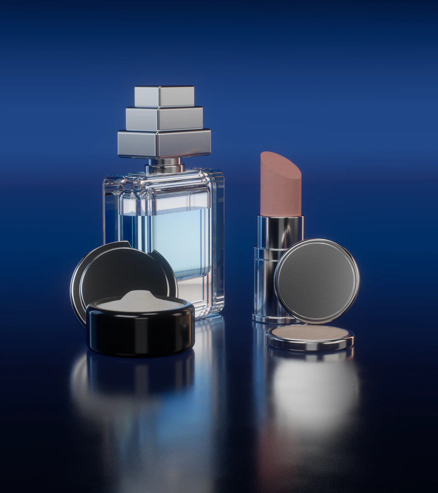

Proposta 11 · Riflessi
Una homepage costruita come uno still life da studio: i cosmetici del settore su un piano lucido, titoli larghi e poco testo. Il riferimento è Vortex FX, segnalato nella raccolta «Hero Section of the week» di Averlo; la proposta lo traduce per un’associazione nazionale di imprese. Le homepage sono cinque: «Dal disegno» e «Cinque scene» cambiano la filiera; «Orizzonte» è «Dal disegno» con la luce all’orizzonte, «Petrolio» con il fondo della prima versione, «Palco» con lo sfondo di «Questo spazio aspetta la tua impresa».

Riferimento
Calore
Movimento
Colore
#020A18Fondo della pagina, testo bianco#031941 → #214888 → #020610Una sola sfumatura verticale, senza orizzonte: dietro gli oggetti continua quella del lato del titolo#1F59A1Aloni e fondali: mai testo su notte (2,8:1)#5B8DFFPulsanti principali, testo #050814#8DB0FFEtichette in mono e messa a fuocorgba(255,255,255,.74)Testi secondari su scuro#FFD9B0Avvisi dell’agenda#F2B27APunti dei vantaggi e aloni caldiContrasti calcolati con la formula WCAG 2.2: tutti i testi superano il livello AA (4,5:1).
Tipografia
Bellezza italiana. Qualità industriale. Valore condiviso.
DM Mono · etichette, date e fonti
Le soglie concordate sono rispettate: almeno 16 px per i testi da leggere, 12 px per tutto il resto.
Qualità
Comune a tutte le proposte: logo ufficiale nelle proporzioni originali, contenuti di esempio dal sito pubblico al 17/11/2026, ricerca e area riservata dimostrative. Gli oggetti dell’apertura sono un render originale, senza marchi.